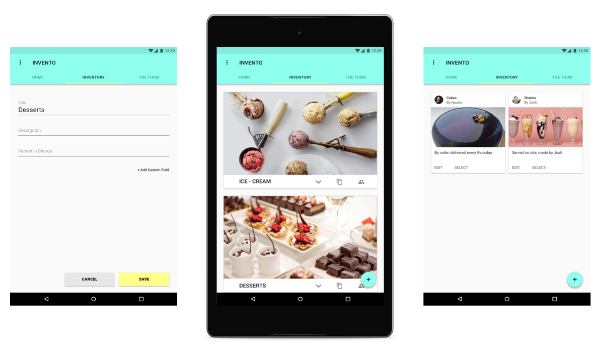
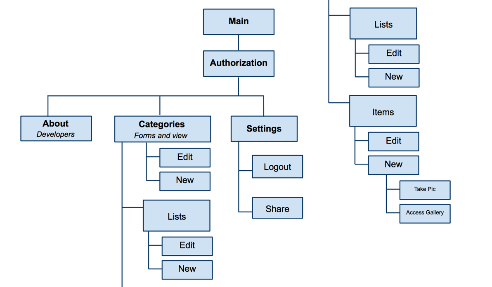

INTRODUCTION

VIEW INITIAL PROPOSAL
Abstract / Summary: This user friendly application intends to provide an easy framework for creating and maintaining an inventory for businesses, shop owners or individuals. Through this application the user can create new items as objects and add them to groups or lists with one click. The number of added items can be adjusted at any time to add or remove items. Groups and lists can be created and customized by the user. Some general items and groups will be provided to get them started.
Context of the application: Our main audience will be using this application while walking around the inventory or sitting down at their workplace. We can assume the item creation and list building part of the application will be used on certain days during the inventory count period but the user will be regularly updating and maintaining their inventory at various time and places. Since we are developing for android systems, we will focus on making the application as customizable as possible, because that is the preference of android users.
Tools: XML, Java, JSON, Android Studio
SITEMAP

The application has 3 main tabs: Home, Inventory and Settings. The inventory tab contains categories which further break into sub-categories and items. User is able to create new instances in all these categories. User must first be authenticated to enter the application.